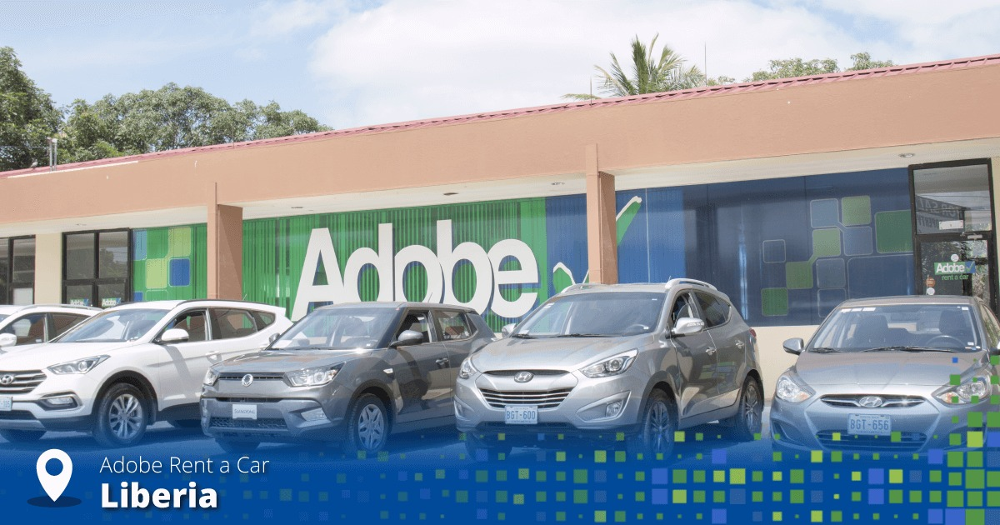

Adobe Rent a car
Adobe Car Rental es una empresa de alquiler de automóviles que opera en Costa Rica. Ofrecemos una amplia gama de vehículos para satisfacer las necesidades de nuestros clientes durante su estadía en el hermoso país de Costa Rica
Adobe Car Rental cerca Aeropuerto Alajuela Costa Rica
Contacto
Teléfono: (506) 2442-2422
US & CAN Toll Free: 1-855-861-1250 (8 am-5 pm Central Time)
Whatsapp: +506 8494-5956
Email: info@adobecar.com 05:00 am - 10:00 pm / Lunes a Domingo
Dirección
Del Hotel Holiday Inn Express, 1.4 Km al Este, Río Segundo, Alajuela.
Lugares cercanos
Museo Histórico Cultural Juan Santamaría - 4.6 km
Rescate Animal Zoo Ave - 12 km
Senderos La Arboleda - 20 km
Colinas del Poás - 24.4 km
Catarata de la Paz - 32.6 km
Volcán Poás - 34 km
Reserva Natural Madre Verde - 41.4 km
Reserva Natural Río Grande Santiago - 48.3 km
Balneario Las Musas - 49.3 km
Reserva Natural Cerro Tinajita - 53.6 km
Adobe Car Rental en Liberia Centro Costa Rica
Contacto
Teléfono: (506) 2542-4890
US & CAN Toll Free: 1-855-861-1250 (8 am-5 pm Central Time)
Whatsapp: +506 8494-5956
Email: opsgte@adobecar.com
Horario de entregas: 5:30 p.m. – 6:00 p.m.
Horario de devoluciones: 7:00 a.m. – 7:30 a.m.
Dirección
Frente a Super Veterinaria Liberia, Liberia, Guanacaste. Exclusivo para entrega y devolución de vehículos en horarios detallados, previa coordinación.
Adobe Car Rental en Aeropuerto Liberia Costa Rica
Contacto
Teléfono: (506) 2542-4890
US & CAN Toll Free: 1-855-861-1250 (8 am-5 pm)
Whatsapp: +506 8494-5956
Email: opsgte@adobecar.com
Horario: 08:00 am - 05:00 pm / Lunes a Domingo
Dirección
De la entrada principal al Aeropuerto Internacional Daniel Oduber, 7 km al Suroeste, Guardia, Liberia, Guanacaste.
Lugares cercanos
Playa Arenilla - 12.9 km
Museo de Guanacaste - 17.6 km
Poza La Pipa - 32.6 km
Catarata La Leona - 34.2 km
Cataratas Llanos del Cortes - 41.2 km
Parque Nacional Santa Rosa - 41.8 km
Reserva Biológica Lomas Barbudal - 44.6 km
Parque Nacional Palo Verde - 55.9 km
Termales El Guayacán - 55.9 km
Parque Nacional Barra Honda - 71.8 km
Adobe Car Rental en Heredia

Contacto
Teléfono: (506) 2101-2147
US & CAN Toll Free: 1-855-861-1250 (8 am-5 pm Central Time)
Whatsapp: +506 8494-5956
Email: opsheredia@adobecar.com
Horario: 08:00 am - 05:00 pm / Lunes a Sábado
Dirección
300 metros al norte de la entrada principal de la Universidad Nacional, Centro Comercial El Fortín, local #9.
Lugares cercanos
Museo de Cultura Popular - 2.8 km
Bosque de la Hoja - 7.9 km
Monte de la Cruz - 9.9 km
Refugio de Vida Silvestre Cerro Dantas - 14.5 km
Parque Nacional Volcán Barva - 19.6 km
Adobe Car Rental en Cartago Costa Rica

Contacto
Teléfono: (506) 2592-4747
US & CAN Toll Free: 1-855-861-1250 (8 am-5 pm Central Time)
Whatsapp: +506 8494-5956
Email: opscartago@adobecar.com
Horario: 08:00 am - 05:00 pm / Lunes a Domingo
Dirección
De la esquina Suroeste del Parque Central, 550 metros al Oeste, Cartago.
Lugares cercanos
Basílica de Nuestra Señora de los Ángeles - 1.5 km
Museo Municipal de Cartago - 1.7 km
Jardín Botánico Lankester - 5.7 km
Parque Ambiental Río Loro - 6.2 km
Canopy La Carpintera - 10.5 km
Mirador de Orosi - 10.7 km
Sanatorio Dr. Carlos Durán Cartín - 16.3 km
Sector Prusia – Volcán Irazú - 19.5 km
Termales Hacienda Orosi - 20 km
Parque Nacional Tapantí -Macizo de la Muerte - 27.5 km
Volcán Irazú - 31.8 km
Adobe Car Rental en Ciudad Quesada Costa Rica
Contacto
Teléfono: (506) 2460-0650
US & CAN Toll Free: 1-855-861-1250 (8 am-5 pm Central Time)
Whatsapp: +506 8494-5956
Email: cquesada@adobecar.com
Horario: 08:00 am - 05:00 pm / Lunes a Sábado
Dirección
800 metros al Norte del Parque Central, Centro comercial Boreal, Local No. 12, Ciudad Quesada, San Carlos, Alajuela.
Lugares cercanos
La Marina Wildlife Rescue Center - 12.3 km
Catarata Coopelesca - 14.2 km
Mina 4 Parque Nacional Juan Castro Blanco - 17.4 km
Parque Nacional Juan Castro Blanco - 17.4 km
Cataratas Las Gemelas - 45.5 km
Catarata Roca Verde - 46 km
Catarata La Celestial - 47 km
Adobe Car Rental en Grecia Costa Rica
Contacto
Teléfono: (506) 2444-1395
US & CAN Toll Free: 1-855-861-1250 (8 am-5 pm Central Time)
Whatsapp: +506 8494-5956
Email: opsgrecia@adobecar.com
Horario: 08:00 am - 05:00 pm / Lunes a Viernes 08:00 am - 12:00 pm / Sábado
Dirección
Lubricentro Oso, Grecia, Alajuela
Lugares cercanos
Parque de Grecia - 800 m
Fábrica de Carretas Joaquín Chaverri - 4.9 km
Jardín Else Kientzler - 8.5 km
Parque Recreativo Municipal Los Chorros - 10.1 km
Parque Recreativo Los Manantiales - 12.4 km
Reserva Forestal de Grecia – Bosque del Niño - 13 km
Botanical Orchid Garden La Garita - 17 km
Catarata Tesoro Escondido - 25.2 km
Museo Histórico José Figueres Ferrer - 27.1 km
Minas del Aguacate - 41.5 km
Adobe Car Rental en San Pedro Costa Rica
Contacto
Teléfono: (506) 2248-1150
US & CAN Toll Free: 1-855-861-1250 (8 am-5 pm Central Time)
Whatsapp: +506 8494-5956
Email: opsguadalupe@adobecar.com
Horario: 08:00 am - 05:00 pm / Lunes a Domingo
Dirección
Centro Comercial Plaza Carolina, Local E-2, San Pedro, San José.
Lugares cercanos
Museo Nacional - 2.4 km
Museo de los Niños y Museo Penitenciario - 2.6 km
Museo de Arte y Diseño Contemporáneo - 2.6 km
Mariposario Spirogyra - 2.6 km
Museo de Jade - 2.7 km
Parque Zoológico y Jardín Botánico Nacional Simón Bolívar - 3 km
Chietón Morén Museo y Mercadito de Artesanías - 3.2 km
Museo Postal, Telegráfico y Filatélico - 3.5 km
Teatro Nacional de Costa Rica - 3.6 km
Museo del Oro Precolombino - 3.7 km
Mercado Central - 3.8 km
Museo de Arte Costarricense - 6.3 km
Museo Histórico y Tecnológico del Grupo ICE - 7.2 km
Museo de Ciencias Naturales La Salle - 7.6 km
Parque de Diversiones - 9.9 km
Piedra de Aserrí - 13.9 km
Refugio Herpetológico de Costa Rica - 19.1 km
Centro de Conservación Santa Ana - 19.6 km
Adobe Car Rental en Limón Costa Rica
Contacto
Teléfono: (506) 2758-4042
US & CAN Toll Free: 1-855-861-1250 (8 am-5 pm Central Time)
Whatsapp: +506 8494-5956
Email: limon@adobecar.com
Horario: 08:00 am - 05:00 pm / Lunes a Domingo
Dirección
50 metros al Oeste del Auto Banco Nacional, Limón.
Lugares cercanos
Veragua Rainforest - 26 km
Santuario de Perezosos de Costa Rica - 31 km
Reserva Natural Pacuare Limon - 46.5 km
Refugio de Vida Silvestre Urpiano - 48.6 km
Costa Rica Tropical Adventures - 64.9 km
Adobe Car Rental en Puerto Viejo Costa Rica
Contacto
Teléfono: (506) 2750-0715
US & CAN Toll Free: 1-855-861-1250 (8 am-5 pm Central Time)
Whatsapp: +506 8494-5956
Email: puertoviejo@adobecar.com
Horario: 08:00 am - 05:00 pm / Lunes a Domingo
Dirección
100 metros al Este del Banco de Costa Rica, contiguo a Cabinas Grant, Ave Central Puerto Viejo, Talamanca
Lugares cercanos
Playa Negra - 950 metros
Playa Cocles - 3.6 km
Jaguar Rescue Center - 4.6 km
Playa Punta Uva - 8.7 km
Refugio Nacional Gandoca – Manzanillo - 10.4 km
Playa Manzanillo - 12.8 km
Playa Grande - 12.8 km
Parque Nacional Cahuita - 17.1 km
Tree of Life - 20.1 km
Adobe Car Rental en Puntarenas Costa Rica
Contacto
Teléfono: (506) 2663-0661
US & CAN Toll Free: 1-855-861-1250 (8 am-5 pm Central Time)
Whatsapp: +506 8494-5956
Email: opspuntarenas@adobecar.com
Horario: 08:00 am - 05:00 pm / Lunes a Domingo
Dirección
Hotel Fiesta Resort, El Roble, Puntarenas
Lugares cercanos
Playas de Doña Ana - 1.4 km
Parador Fotográfico Caldera - 6.3 km
Paseo de los Turistas - 11.9 km
El Faro de Puntarenas - 13.2 km
Mirador de Cocodrilos - 34.7 km
Parque Nacional Carara - 37.3 km
Crocodile Man Tour - 41.2 km
Playa Blanca - 42.5 km
Carara Adventure Park - 44.4 km
Adobe Car Rental en Quepos Costa Rica
Contacto
Teléfono: (506) 2777-4242
US & CAN Toll Free: 1-855-861-1250 (8 am-5 pm)
Whatsapp: +506 8494-5956
Email: xqp@adobecar.com
Horario: 08:00 am - 05:00 pm / Lunes a Domingo
Dirección
Quepos centro, frente a la entrada principal de la cancha de Fútbol, Quepos, Puntarenas.
Lugares cercanos
Playa Espadilla - 5.3 km
Playa Biesanz - 5.5 km
Parque Nacional Manuel Antonio - 6.7 km
Campesinos Eco Lodge - 23.4 km
Adobe Car Rental en Conchal Tamarindo Costa Rica
Contacto
Teléfono: (506) 2653-6262
US & CAN Toll Free: 1-855-861-1250 (8 am-5 pm Central Time)
Whatsapp: +506 8494-5956
Email: flamingo@adobecar.com
Horario: 08:00 am - 05:00 pm / Lunes a Domingo
Dirección
De la intersección de Huacas 3 Km hacia Playa Flamingo y Conchal, Centro Comercial Paseo del Mar.
Lugares cercanos
Playa Brasilito - 4 km
Playa Conchal - 5.6 km
Playa Flamingo - 7.6 km
Monkey Park - 8.8 km
Playa Zapotillal - 9.3 km
Playa Platanar - 9.4 km
Playa Potrero - 9.9 km
Playa Prieta - 13 km
Playa Grande - 13.4 km
Canopy Tour Cartagena - 13.5 km
Playa Danta - 15.7 km
Playa Avellanas - 23.8 km
Adobe Car Rental en Uvita Costa Rica
Contacto
Teléfono: (506) 2743-8102
US & CAN Toll Free: 1-855-861-1250 (8 am-5 pm)
Whatsapp: +506 8494-5956
Email: opsuvita@adobecar.com
Horario: 08:00 am - 05:00 pm / Lunes a Domingo
Dirección
Frente al supermercado BM, contiguo a la panadería Bahía Ballena, Uvita, Puntarenas
Lugares cercanos
Playa Colonia - 1.9 km
Catarata Uvita - 2.4 km
Parque Nacional Marino Ballena - 2.5 km
Playa Piñuela - 9.5 km
Playa Ventanas - 11.7 km
Playa Ballena - 9.7 km
Altura Wildlife Sanctuary - 12.8 km
Playa Ojochal - 15.6 km
Cascada De Ojochal - 19.7 km
Reptilandia - 27.4 km
Cataratas Nauyaca - 28.4 km
Museo Comunitario de Rey Curré - 69.9 km